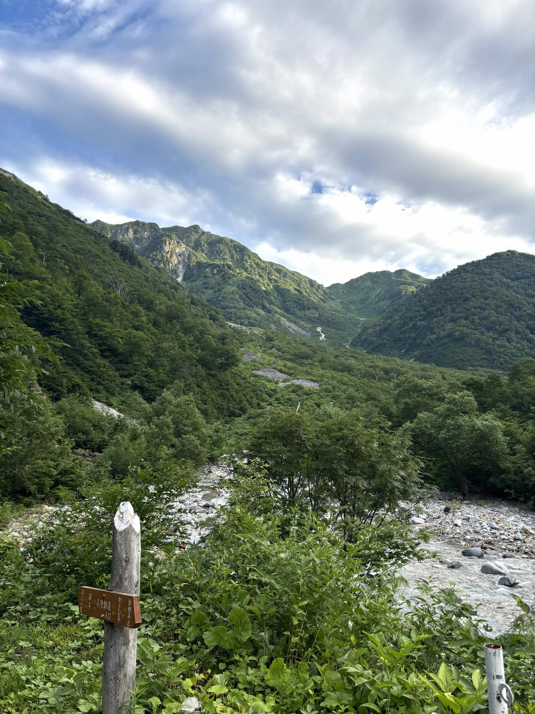
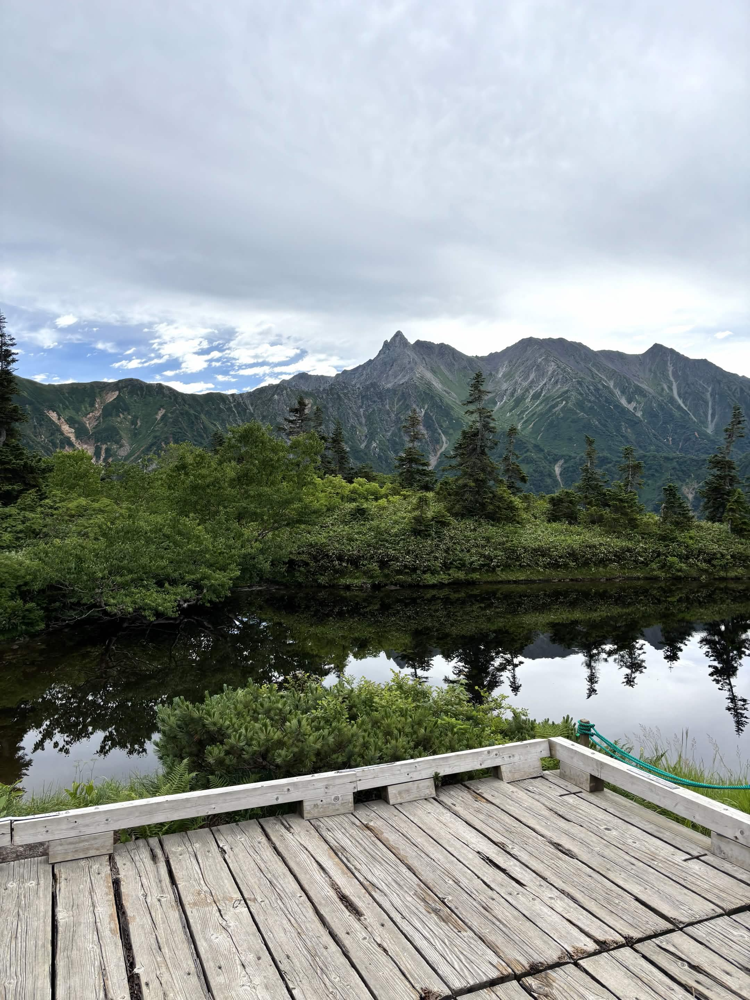
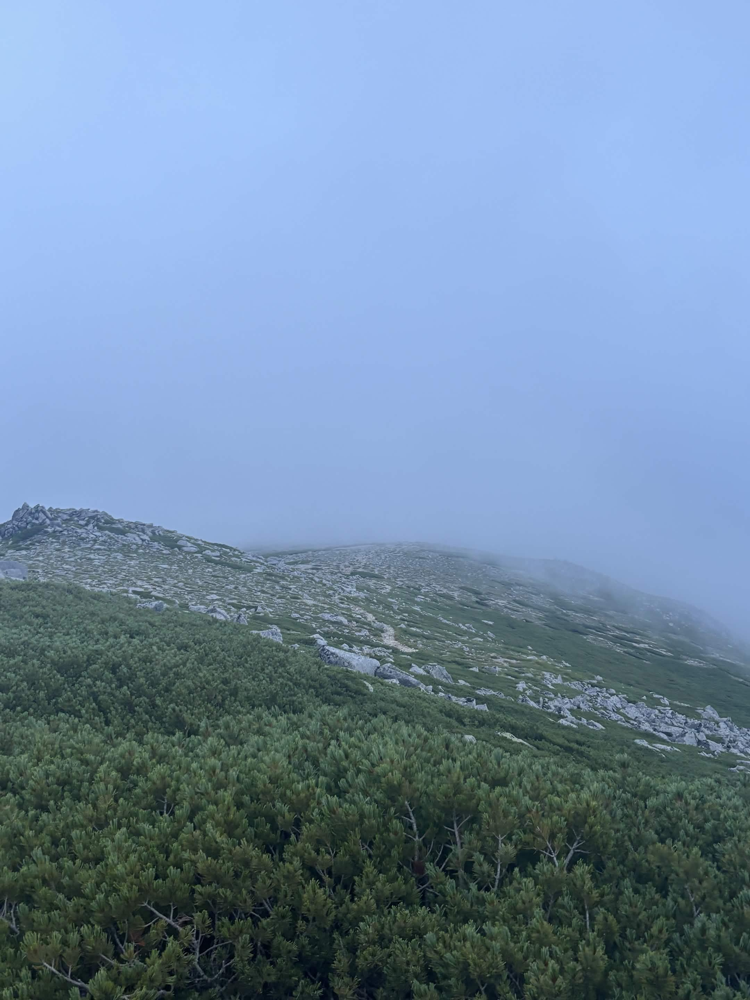

| 日程 | 2025年8月8日〜8月9日 |
|---|---|
| メンバー | ソロ（なし） |
| 難易度（俺流10段階） | 技術力 2 / 体力度 6 |
| アクセスコース目安 |
・新穂高センター → わさび平小屋：約1時間30分 ・わさび平小屋 → 鏡平山荘：約3時間30分 ・鏡平 → 弓折乗越：約1時間弱 ・弓折乗越 → 双六小屋：約1時間 ・双六小屋 → 双六岳：約1時間弱 |

初めての北アルプス中央部へのチャレンジ。広大な山塊とスケールの大きさを肌で感じる登山となりました。

雨での途中撤退は非常に悔しさが残る結果となりましたが、北アルプス奥深区の魅力を存分に感じることができました。「もっとこの先、さらに奥の領域へ進みたい」という新たな挑戦への思いが強くなった山行です。
← HOMEへ戻る